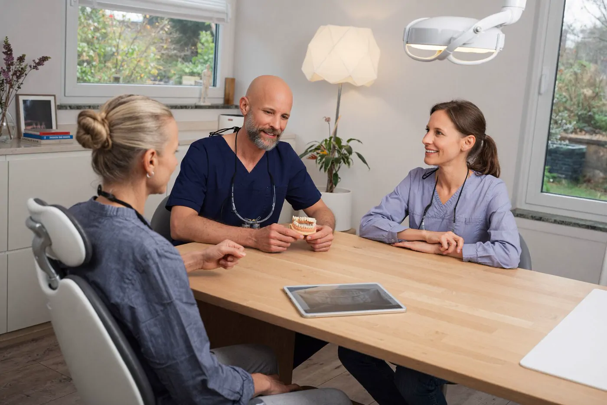

Zahnarzt in Essen-Werden
Ihr Zahnarzt für Zahnimplantate in Essen
Feste Zähne statt Lücke, Brücke oder Prothese. Metallfrei aus Keramik.
Wir rufen Sie zurück, in der Regel innerhalb von 24 bis 48 Stunden.
- 15+Jahre Erfahrung
- 3.500+Implantate gesetzt
- 4,7 ★bei Google
Prothese oder Brücke?
Es geht auch fest.

- Die Prothese drückt oder wackelt.Beim Essen in Gesellschaft verunsichert das.
- Für eine Brücke wird geschliffen.Oft trifft es gesunde Nachbarzähne.
- Der Kieferknochen bildet sich zurück.Das passiert dort, wo die Zahnwurzel fehlt.
Die Lösung: Ein Zahnimplantat ersetzt den fehlenden Zahn ganz, von der Wurzel bis zur Krone. Die Nachbarzähne bleiben unangetastet.
Einfach erklärt
Was ist ein Zahnimplantat?
Ein Implantat ist eine künstliche Zahnwurzel. Sie wird fest im Kiefer verankert. Darauf sitzt die Krone, also der sichtbare Zahn. Am Ende sieht es aus wie ein eigener Zahn und fühlt sich auch so an.
- Fester HaltNichts wackelt, nichts drückt.
- Essen, was Ihnen schmecktWieder kräftig zubeißen, ob Apfel oder Steak.
- Unbeschwert sprechen und lachenIhre Zähne bleiben dort, wo sie hingehören.
- Gut für den KieferknochenDas Implantat belastet ihn ähnlich wie eine echte Zahnwurzel.
Unser Material
Wir setzen Keramik statt Titan
Die meisten Implantate sind aus Titan, also aus Metall. Unsere sind aus Keramik: weiß wie ein Zahn und ganz ohne Metall.
Material
Farbe
Verträglichkeit
Kosten
Titan ist seit Jahrzehnten bewährt. Was zu Ihnen passt, klären wir gemeinsam und ehrlich.
Ihr Zahnarzt
Hauke Hellriegel
Hauke Hellriegel ist seit über 15 Jahren Zahnarzt und hat mehr als 3.500 Implantate gesetzt. Seine Praxis in Essen-Werden führt er seit 2014. Er setzt konsequent auf Implantate aus Keramik und arbeitet metallfrei.
- Fortbildung in Implantologie am UKSH Kiel
- Mitglied der ISMI, der internationalen Gesellschaft für metallfreie Implantologie
„Zahnmedizin ist für mich kein Handwerk auf Stückzahl. Sie ist eine Vertrauenssache, und Vertrauen entsteht nur, wenn man wirklich zuhört, ehrlich beraten kann und mit den richtigen Materialien arbeitet.“
So geht es los
In drei Schritten
-
Wir rufen Sie an
Sie stellen Ihre Anfrage. Jemand aus unserem Team meldet sich innerhalb von 24 bis 48 Stunden, hört zu und klärt Ihre ersten Fragen.
ca. 15 Minuten · kostenfrei -
Sie füllen den Fragebogen aus
Sie bekommen per Link unseren Gesundheitsfragebogen. Bitte füllen Sie ihn vollständig aus und unterschreiben Sie an den drei markierten Stellen.
online · per Link -
Beratung bei Hauke Hellriegel
Ein persönliches Gespräch in der Praxis. Wir prüfen den Befund und besprechen Ihre Ziele und Möglichkeiten.
ca. 60 Minuten · Privatleistung
Und danach? Es folgen die Planung mit 3D-Röntgen, ein schriftlicher Heil- und Kostenplan, die Behandlung und die Nachsorge.
Gut zu wissen
Häufige Fragen
Tut die Implantation weh?
Wie lange dauert die Behandlung?
Kann jeder ein Zahnimplantat bekommen?
Hält Keramik so lange wie Titan?
Wie schnell bekomme ich einen Termin?
Anfahrt
So finden Sie uns
Adresse
Praxis Hauke HellriegelHeckstraße 3145239 Essen (Werden)
Parkplätze direkt vor der Tür. Bus 169, 180, 190 und S6 bis Haltestelle Werden.
Route in Google MapsSprechzeiten
- Mo · Mi · Fr
- 08:00 – 15:00 Uhr
- Di · Do
- 08:00 – 19:30 Uhr
- Samstag
- nach Vereinbarung
Behandlung nur nach Terminvereinbarung.
Ihr erster Schritt
Ein kurzes Telefonat. Kostenfrei.
Sie stellen Ihre Anfrage, jemand aus unserem Team ruft Sie an und klärt Ihre ersten Fragen. Danach wissen Sie, wie es weitergeht.